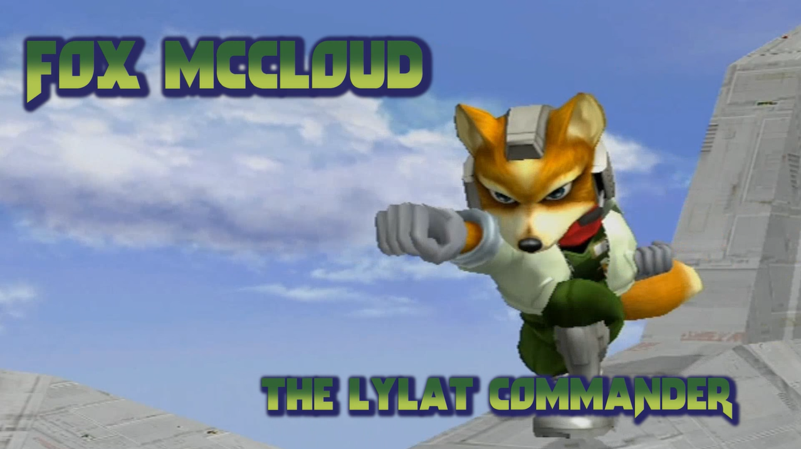

Fox Mccloud, chef de l'équipe Star fox, est considéré par plusieurs comme le visage de SSBM. Il est le personnage le plus populaire et est considéré par la majorité des joueurs comme étant le meilleur personnage de SSBM. Reconnu pour son gameplay tres demandant au niveau technique, Fox est tres polyvalent et excelle que ce soit utilisé d'une maniere défensive ou offensive.

Fox est le le personnage le plus rapide de SSBM, la combinaison de sa vitesse extreme et la vitesse de ses attaques fait en sorte que Fox est un expert dans l'art du combat rapproché. Il excelle aussi dans le "rush down", une tactique qui consiste a jouer d'une maniere tres agrressive pour ne pas laisser la chance a l'adversaire de bouger et potentiellement eviter les attaques relativement courte de Fox. Malgré tout ses forces, Fox est un personnage qui tombe rapidement, cela le rend plus susceptible a de long combos par la majorité des peronnages, surtout Marth, qui est reconnu pour ses combos devastateurs sur Fox.